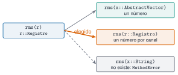

Hasta ahora un registro de vibraciones ha sido una matriz suelta y, a su lado, una variable con la frecuencia de muestreo y otra con los nombres de los canales. Funciona hasta que alguien mezcla los datos de un sensor con la frecuencia de otro. Julia permite juntar todo en un tipo propio que se valida al crearse, y definir funciones que se comportan según el tipo de lo que reciben: es el despacho múltiple, la idea central del lenguaje. Esta unidad construye el tipo Registro que se usará en el resto del curso.
NotaCómo se lee esta unidad
Tiempo orientativo: 90 minutos. Objetivos (4), teoría en cinco píldoras (18), práctica guiada (40), «Pídeselo a Claude» (12), ejercicios (14) y cierre (2). El tipo se define en la propia página. Cuando se reutilice en varias unidades se moverá a Resonancia.jl, con su docstring y su test, como exige la regla del curso.
Objetivos y prerrequisitos
Objetivos. Al terminar esta unidad sabrás:
definir un struct con campos tipados y decidir entre inmutable y mutable;
escribir un constructor que valide los datos y lance errores claros;
organizar tipos con un tipo abstracto y consultar la jerarquía;
escribir varios métodos de una misma función y explicar cuál se ejecuta y por qué;
extender funciones de la biblioteca estándar (getindex, show) a un tipo propio.
Prerrequisitos.J1.4 (funciones) y J1.6 (datos tabulares).
Reparto con otras unidades. Los tipos parametrizados y la organización en módulos están en J3.2. Las unidades físicas se tratan al final con Unitful.jl.
Teoría breve
J1.8.1 struct: juntar datos con nombre
Un struct agrupa campos con nombre y tipo. Por defecto es inmutable: una vez creado no se puede cambiar un campo, lo que da seguridad y velocidad. Si de verdad hace falta modificarlo, se declara mutable struct.
Ver el código
struct Sensor nombre::String sensibilidad::Float64 # V por (m/s²)ends =Sensor("acelerómetro 1", 0.1)(campos =fieldnames(Sensor), valor = s.sensibilidad, tipo =typeof(s))
(campos = (:nombre, :sensibilidad), valor = 0.1, tipo = Sensor)
Una NamedTuple (como (rms=0.7, pico=1.4)) sirve para agrupar un resultado puntual. Un struct es mejor cuando los datos tienen reglas que cumplir y funciones propias, que es el caso de un registro.
Con s = Sensor("a", 0.1), la asignación s.sensibilidad = 0.2 da un error, porque el struct es inmutable.
Verdadero. Haría falta declarar mutable struct Sensor; en general se prefiere inmutable y crear un valor nuevo.
J1.8.2 Constructores con validación
Un constructor interno (se escribe dentro del struct) comprueba que los datos son coherentes y solo entonces llama a new. Así es imposible crear un objeto incoherente. Para el registro, las reglas son: frecuencia de muestreo positiva y un nombre por cada columna de datos.
Ver el código
abstract type Senal endstruct Registro <: Senal datos::Matrix{Float64} # N × c (muestras × canales) fs::Float64 # Hz canales::Vector{String} unidad::StringfunctionRegistro(datos::AbstractMatrix, fs::Real, canales::AbstractVector{<:AbstractString}, unidad::AbstractString="m/s²") fs >0||throw(ArgumentError("fs debe ser positiva (recibido $fs)"))size(datos, 2) ==length(canales) ||throw(ArgumentError("hay $(size(datos, 2)) columnas y $(length(canales)) nombres de canal"))returnnew(Float64.(datos), Float64(fs), String.(canales), String(unidad))endend
AdvertenciaErrores frecuentes
Validar al crear y no «cuando se usa» evita que un dato incoherente viaje por el programa hasta fallar lejos de su origen. Los mensajes de error deben decir qué se recibió y qué se esperaba (recibido -1, hay 3 columnas y 2 nombres).
Añade una tercera regla de validación razonable para Registro y escribe cómo la comprobarías en el constructor.
Por ejemplo: que los datos no estén vacíos (size(datos, 1) > 0 || throw(ArgumentError("registro vacío"))), o que no contengan NaN. Cualquier regla que evite estados absurdos es válida.
J1.8.3 Tipos abstractos y jerarquía
Un tipo abstracto (abstract type Senal end) no tiene datos: sirve para agrupar tipos concretos y escribir funciones que valen para todos. El operador <: significa «es un subtipo de». Los tipos numéricos de Julia siguen la misma idea (portada de la unidad); se recorren con supertype y subtypes:
Ver el código
(cadena = [Float64, supertype(Float64), supertype(AbstractFloat), supertype(Real), supertype(Number)], registro = (supertype(Registro), Registro <: Senal), subtipos_de_AbstractFloat =subtypes(AbstractFloat))
Solo los tipos concretos se pueden instanciar; los abstractos son «etiquetas» para organizar el código.
J1.8.4 Despacho múltiple
Una función puede tener varios métodos, cada uno con sus tipos de argumentos. Cuando se llama, Julia elige el método más específico según los tipos de todos los argumentos (de ahí «múltiple»; Python solo mira el primero). Con esto, rms puede ser una sola función con dos comportamientos (Figura 1):
Ver el código
rms(x::AbstractVector) =sqrt(mean(abs2, x)) # un númerorms(r::Registro) = [rms(c) for c ineachcol(r.datos)] # un número por canallength(methods(rms))
2

Figura 1: Despacho múltiple. Al llamar a rms(r) con un Registro, Julia elige entre los métodos disponibles el que corresponde al tipo del argumento. Con un tipo para el que no hay método, el resultado es un MethodError.
Las herramientas para ver qué ocurre son methods(f) (lista de métodos) y @which f(x) (cuál se aplica). Y se pueden extender las funciones de la biblioteca estándar a un tipo propio escribiendo métodos para ellas, con el prefijo Base., como Base.getindex (el indexado r[...]) o Base.show (cómo se imprime).
NotaIdea clave
No se escriben if tipo == ... encadenados: se escribe un método por caso y Julia elige. Para añadir un tipo nuevo se añade un método, sin tocar el código existente.
En Julia, el método de una función se elige solo por el tipo de su primer argumento.
Falso. Se tienen en cuenta los tipos de todos los argumentos. Esa es la diferencia con el despacho simple de la programación orientada a objetos clásica (y de singledispatch en Python).
J1.8.5 Unidades físicas
Un Float64 no sabe si es metros o segundos, y un error de unidades es de los más caros. Unitful.jl añade unidades a los números y comprueba la coherencia dimensional: sumar metros con segundos es un error, y las conversiones son automáticas. En este curso se sigue la regla de usar unidades SI y declararlas (campo unidad, ejes con unidades), y Unitful queda como herramienta opcional que no forma parte del entorno del curso.
usingUnitful# en tu entorno personala =9.81u"m/s^2"uconvert(u"cm/s^2", a) # 981.0 cm s⁻²a +1u"s"# DimensionError: no se pueden sumar m/s² y s
Práctica guiada
Vamos a construir Registro con los datos del edificio de tres plantas, a añadirle métodos y a comprobar la validación.
Paso 3. Un método que devuelve el mismo tipo.recortar crea un registro nuevo con un tramo del original; como pasa por el constructor, la validación se aplica de nuevo.
(fs_negativa = "ArgumentError: fs debe ser positiva (recibido -1)", canales_de_menos = "ArgumentError: hay 3 columnas y 2 nombres de canal", inmutable = "setfield!: immutable struct of type Registro cannot be changed", sin_metodo = "MethodError: no method matching rms(::String)\nThe function `rms` exists, but no method is defined for this combination of argument types.\n\nClosest candidates are:\n rms(!Matched::Main.Notebook.Registro)\n @ Main.Notebook ~/Desktop/resonancia/julia/j1-esencial/j1-8-tipos-propios/index.qmd:132\n rms(!Matched::AbstractVector)\n @ Main.Notebook ~/Desktop/resonancia/julia/j1-esencial/j1-8-tipos-propios/index.qmd:131\n")
Los cuatro errores son útiles: dicen qué falla. El último es un MethodError, que es lo que ocurre cuando ningún método encaja con los tipos recibidos.
Paso 5. Un método que dibuja. Se puede incluso dar al tipo su propia función de representación, con el mismo estilo que en J1.7.
Figura 2: Los tres canales de un Registro dibujados con una única función dibujar(r, t0, t1), que usa los nombres de canal y la unidad del propio objeto. Se muestran los primeros 5 s.
En Python el equivalente de un struct inmutable es @dataclass(frozen=True), y __post_init__ hace de constructor con validación. Para despachar por tipo existe functools.singledispatch, que solo mira el primer argumento. La versión probada, con seis pruebas que incluyen los valores de Julia, está en python/registro.py.
La diferencia de fondo: en Python, los métodos pertenecen a la clase (r.duracion); en Julia, pertenecen a la función (duracion(r)), y cualquiera puede añadir métodos a una función existente sin tocar el tipo.
NotaQué se ha conseguido
Un tipo Registro que no se puede crear mal, con funciones propias (duracion, recortar, dibujar), indexado por nombre y por número, y un rms que sirve para un vector y para un registro. Es la base para los análisis de J2 y de las unidades de M.
«Pídeselo a Claude»
TipPrompt
«Con Julia y --project=., define abstract type Senal end y struct Registro <: Senal con campos datos::Matrix{Float64} (N×c), fs::Float64, canales::Vector{String} y unidad::String. Con un constructor interno que lance ArgumentError con mensaje claro si fs ≤ 0 o si el número de columnas no coincide con el de canales. Añade muestras, duracion, recortar(r, t0, t1), Base.getindex por nombre y por número, y rms con un método para vectores y otro para registros. Pruébalo con escenario_A.csv (separador ;, 100 Hz, columnas 2 a 4) y dame la duración, los RMS por canal y los mensajes de error. No inventes valores: si no puedes ejecutarlo, dilo.»
Verifica. (a) Que el registro tiene 60 000 muestras y 600 s, y los RMS son 0,2336, 0,2244 y 0,1981 m/s². (b) Que recortar(r, 0, 10) da 1000 muestras y 10 s. (c) Que Registro(r.datos, -1, r.canales) falla con «fs debe ser positiva» y no con un error genérico. (d) Que el constructor es interno (new) y que el struct es inmutable. (e) Que no hay if typeof(x) == ... donde bastan métodos distintos.
Ejercicios
¿Cuánto dura recortar(r, 0, 10) según duracion?
10 s: son 1000 muestras a 100 Hz.
¿Cuál es el RMS del canal «planta 1» en los 10 primeros segundos?
0,2775 m/s², frente a 0,2336 m/s² de todo el registro de 600 s: un tramo corto no basta para estimarlo bien.
Se puede crear un objeto con Senal(), porque Senal es un tipo del programa.
Falso. Senal es abstracto: sirve para agrupar tipos concretos y no se puede instanciar.
Quieres añadir un tipo Espectro <: Senal con campos f y P. Explica qué tendrías que hacer para que rms también funcione sobre él, sin modificar el código que ya existe.
Dice que basta con añadir un método rms(e::Espectro).
Menciona que no hay que tocar los métodos existentes (esa es la ventaja del despacho múltiple).
La doy por superada si…
Defino un struct con campos tipados y sé cuándo usar mutable.
Escribo un constructor interno que valida y lanza errores con mensaje claro.
Distingo tipo abstracto y concreto, y consulto la jerarquía con supertype.
Escribo varios métodos de una función y sé ver cuál se aplica con @which.
Extiendo getindex o show a un tipo propio.
Cierre. Escribe tres líneas: qué he entendido, qué todavía no domino y cuál es mi siguiente paso pequeño. Con esto termina el nivel J1.